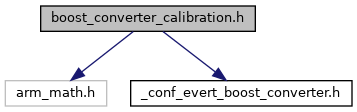
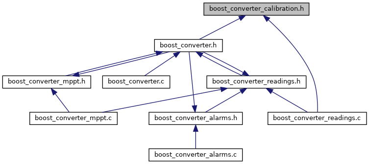

boost_converter_calibration.h
Include Graph
Dependency Graph
API
Functions
-
static inline void EVERT_BOOST_CONVERTER_InitCalibrations()
Variables
-
EVERT_BOOST_CONVERTER_ConfigCurrentCalibrationTypeDef calibration_current
-
EVERT_BOOST_CONVERTER_ConfigVoltageCalibrationTypeDef calibration_voltage
-
struct EVERT_BOOST_CONVERTER_ConfigCurrentCalibrationTypeDef
- #include <boost_converter_calibration.h>
-
struct EVERT_BOOST_CONVERTER_ConfigVoltageCalibrationTypeDef
- #include <boost_converter_calibration.h>